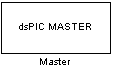
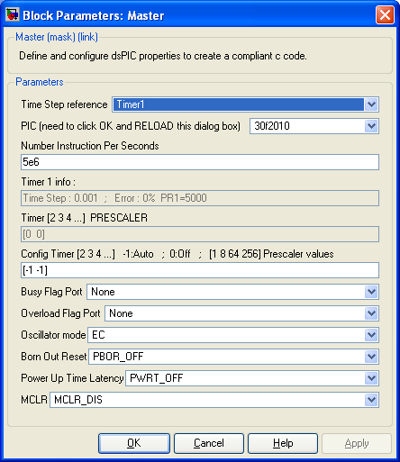

| |
Define and configure dsPIC properties to create a compliant c code.

Description
The Master block set dsPIC options like PLL, Brown Out Reset, and provide usefull information to Matlab/Simulink.
Dialog Box

Illustration not up to date !
-
Tmer1 : The model time step is set using the Timer1 automatically configured (Prescaler and PR1).
-
ADC : The ADC conversion time can be used only when the ADC block is set to produce two or more sample per channel. The conversion time is 'augmented' so as to have reach the model time step at the end of all conversion needed in 1 time step.
-
Free Run : The model execute at its maximum speed. The Time step is not constant since the calculation time may changed slightly between time step. The simulink model time step is not taken into acount.
-
-
-
PIC
-
Specify the Microchip microcontroller target. 59 Supported devices : 24fJ128GA006, 24fJ128GA008, 24fJ128GA010, 24fJ64GA006, 24fJ64GA008, 24fJ64GA010, 24fJ96GA006, 24fJ96GA008, 24fJ96GA010, 30f2010, 30f2011, 30f2012, 30f3010, 30f3011, 30f3012, 30f3013, 30f3014, 30f4011, 30f4012, 30f4013, 30f5011, 30f5013, 30f5015, 30f5016, 30f6010A, 30f6011, 30f6012, 30f6013, 30f6014, 30f6015, 32MX360F512L, 32MX460F512L, 33fJ128GP206, 33fJ128GP306, 33fJ128GP310, 33fJ128GP706, 33fJ128GP708, 33fJ128GP710, 33fJ128MC506, 33fJ128MC510, 33fJ128MC706, 33fJ128MC708, 33fJ128MC710, 33fJ256GP506, 33fJ256GP510, 33fJ256GP710, 33fJ256MC510, 33fJ256MC710, 33fJ64GP206, 33fJ64GP306, 33fJ64GP310, 33fJ64GP706, 33fJ64GP708, 33fJ64GP710, 33fJ64MC506, 33fJ64MC508, 33fJ64MC510, 33fJ64MC706, 33fJ64MC710,
-
Instruction Cycle Frequency
-
Specify the Instruction Per Secondes (MIPS) executed not gven in million here. Configuratoin of UART baud, timers prescaler and the time step rely on this frequency information. When using a quartz, the instruction frequency is calculated using : IPS = (FreqQuartz / 4) * PLL factor (1 if no PLL used).
-
Config Timer 2-3-4-5
-
Set the prescaler for the timer 2,3 and 4,5 when available in the microcontrôller. Theses times are used by certain periphery like Output Compare, Input Capture. Set -1 for the timer prescaler to be set by matlab using optimal criterion.
-
Busy Flag Port
-
Set the port specified to 1 during the time step calculation and 0 during idle time. This allow to check that all calculation are finished in less that one time step.
-
Busy Flag Port
-
Set the port specified to 1 during one time step if the previous time step was not finished when starting the execution of current time step.
-
config Oscillator mode
-
Sepecify PIC Oscillator configuration.
-
config Born Out Reset
-
Specify Voltage under which the microcontrôller Reset.
-
config Power Time
-
Specify time for the pic to start onced powered. (Lets time for alimentation tension to settle properly before starting instructions execution).
-
config MCLR
-
If disable, MCLR pin has not the hardware reset function on programme execution.
When enable, Pic stop execution and reset when MCLR pin is in its low state.
|
The Microchip name PIC, dsPIC, and MPLAB are
registered trademarks of Microchip Technology Inc.
MATLAB, Simulink, and Real-Time Workshop are
registered trademarks of The MathWorks, Inc.
| Lubin Kerhuel 's Website |
Contact : [adresse e-mail retirée] |
|
|